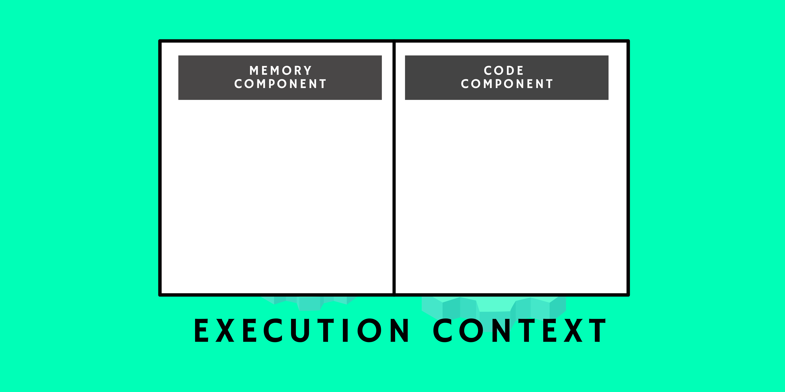
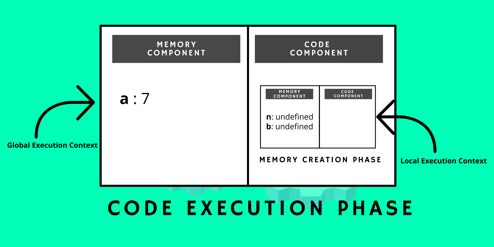
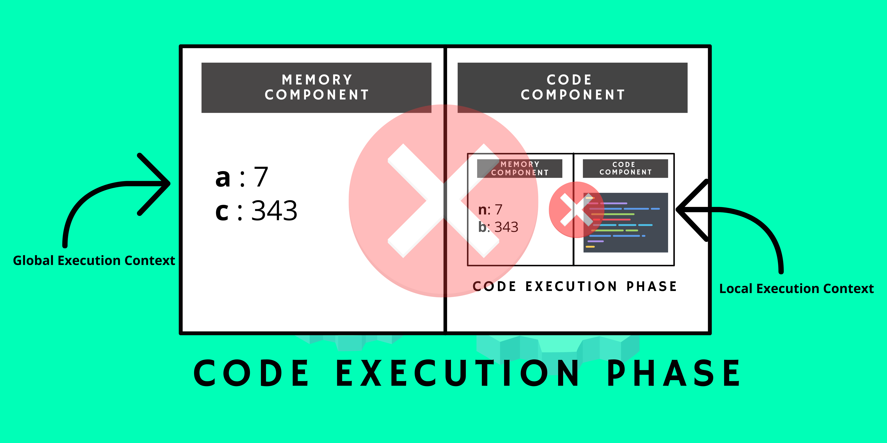
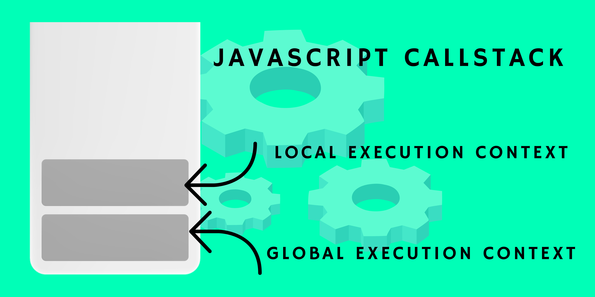

javascript : behind the scene.
14 February, 2022 | Sobit Prasad
introduction.
I think we all like to watch BTS(Behind The Scene), whether it is a BTS of a movie or it could be BTS of your favorite show. But have you ever imagined if we could watch behind the scene of a programming language? Yes, you heard it right we can see BTS of a programming language. So in this blog, we will see how javascript actually works behind the scene?
what happens when we run our JavaScript program?
So when you run your beautiful code in JavaScript, an Execution Context is created. So if you are wondering what the heck is this Execution Context, you can think it of like the movie set where all the shots of the movies are to be taken. So everything in JavaScript happens inside this Execution Context.
In the Execution Context, there are two main components.
I. Memory Component (also known as Variable Environment)
II. Code Component (also known as Thread of Execution)
memory component.
In Memory Component, all the values of the variables are assigned in a key-value pair as simple as that.
code component.
In Code Component, our code gets executed line by line in a specific order. We will understand it more deeply when we will talk about the phases that occur when we run our code. But for now, just keep in mind that when we run our code, an Execution Context is created and it has two components - memory and code component.
what after the execution context?
So far we know that when we run our code an Execution Context is created. Now, our code has to go through two beautiful phases and these phases are -
phase 1 : memory creation phase.
In this phase, our codes get scanned and all the variables are assigned with a value of undefined but in the case of function, it stores the whole code inside that function name. We will understand it later with the help of an example.
phase 2 : code execution phase.
In this phase, our codes run line by line in a specific order, and all the actual values of the variable get replaced by undefined which was held earlier as a placeholder.
example : understanding execution context with the help of an example.
I know it might be a little overwhelming, but don't worry let's understand the whole concept with the help of an example. Suppose this is the code we want to execute.
- var a = 7;
- function cube(n){
- var b = n*n*n;
- return b;
- }
- var c = cube(a);
Now when we run this code an Execution Context is created and inside the Execution Context it has to go through two phases - MEMORY CREATION PHASE and CODE EXECUTION PHASE. First, it will go through Memory Creation Phase and assign the memory to all the variables. It will assign undefined to variable a and c and also it will assign the whole code inside function cube to cube.

Now, here comes the Second Phase i.e. the Code Execution Phase. In this phase, our code will run line by line. So, when it goes to the first line, it will assign 7 to variable a. Now, it will move to the next line and founds that there is nothing to execute so it will jump to the sixth line. Now, the sixth line is invoking the function cube with parameter a which holds the value 7. Now, whenever a new function is invoked, another execution context is created inside the previous one and again it will follow the same procedure.
Now in this execution context (i.e. the execution context inside the Global Execution Context), again it has to go through Memory Creation Phase and Code Execution Phase. In Memory Creation Phase, it will assign undefined to variables n and b. Now, it will move to the next phase i.e. the Code Execution Phase. In this phase, variable n will be assigned with value a because it was the parameter of the function cube with variable c, now a will be replaced by 7 which is taken from the Global Execution Context. Now finally the output of variable b i.e 343 will be returned to variable c in the Global Execution Context. Now after that, firstly the Local Execution Context will be deleted and after returning the value of variable c, the Global Execution Context will also be deleted.
Now, if you are wondering how JavaScript handles all this, I mean this is a lot. Suppose if we invoke a function inside another function and again inside another function, a number of 'Execution Context' will be created, but all this handles by JavaScript very beautifully. So how does it happen? Ladies and Gentlemen, give a big round of applauding to none other than our very dear CALLSTACK.
callstack: the game changer.
We know that JavaScript is a synchronous single-threaded programming language and thus it has only one CALLSTACK which means that it can perform only one command at a time in a specific order. So, what basically CALLSTACK does do?
CALLSTACK maintains the order of execution of EXECUTION CONTEXT which means that when we run our code the global execution context that is created at first will be pushed to the stack first and again if another function is invoked/called, it will be pushed at the top of CALLSTACK and again if another function is invoked it will be pushed to the top. Now when the task of the function at the top is completed it will be removed from the stack and at the end, the Global Execution Context is deleted.
This is how it looks Behind The Scene of JavaScript. Isn't it amazing? If you are reading till here, thank you so much for that, I appreciate it. That's it int this blog. Till then, see you in the next blog.